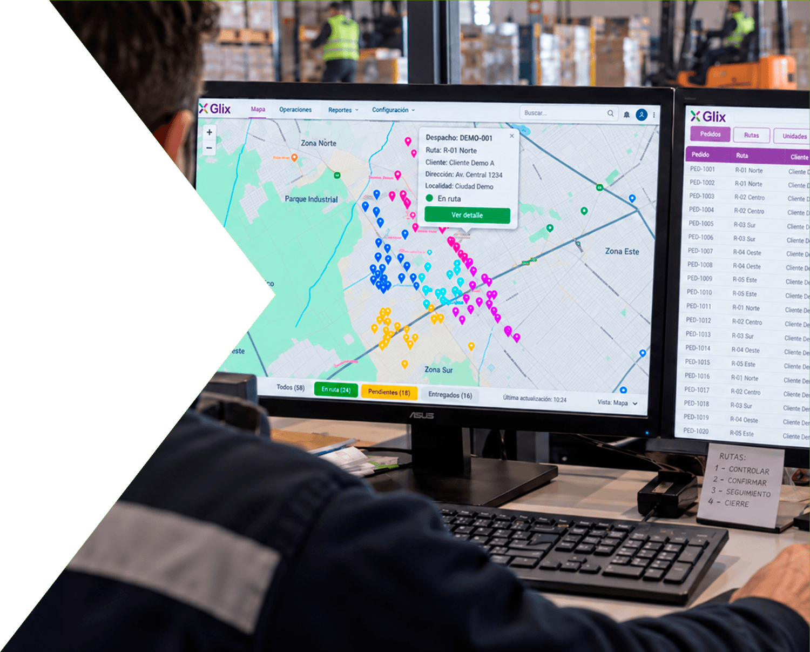
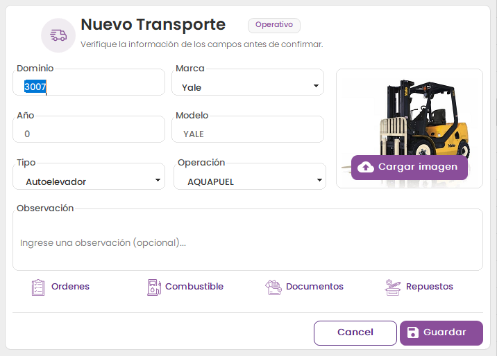

Pedidos relacionados
Cada despacho conserva los pedidos asociados para seguir la operación con contexto.



Organizá despachos, seguí entregas y cerrá cada recorrido con toda la información conectada en un mismo sistema.
Hablemos de tu operaciónGLIX reúne despachos, entregas, documentación y saldos para que cada recorrido pueda seguirse con claridad.
La información pasa de la operación a la administración y a finanzas sin perder continuidad.

Tené una visión clara de cada recorrido, su estado y las entregas asociadas, sin depender de información dispersa entre distintas áreas.
Cada despacho conserva los pedidos asociados para seguir la operación con contexto.
Consultá el avance de cada transporte y mantené la información al alcance del equipo.
Una vista de transportes ayuda a entender qué está pasando en cada recorrido.
Centralizá la información y documentación de cada transporte para que el equipo pueda trabajar con un proceso claro desde la preparación hasta la entrega.
La información de cada despacho permanece disponible antes de su salida.
El estado de cada entrega acompaña al transporte y mantiene informado al equipo.
Entregas, devoluciones y diferencias forman parte de la misma operación, manteniendo el historial y el seguimiento de principio a fin.
Las diferencias de una entrega quedan relacionadas con el despacho correspondiente.
Las notas de crédito mantienen el vínculo con la operación que les dio origen.
Los retornos de mercadería forman parte del seguimiento de cada recorrido.
Los movimientos de productos quedan relacionados con las diferencias y los retornos.
Reuní entregas, recaudación, retornos y saldos para simplificar la liquidación y entender el resultado real de cada operación.
Compará lo entregado y lo declarado para identificar diferencias al cerrar el recorrido.
Los saldos del recorrido permanecen vinculados con la liquidación y las cuentas corrientes.
Las transferencias quedan relacionadas con la operación para completar la visión del cierre.
Efectivo y otros valores forman parte de la información de cierre del transporte.
Los saldos de envases y cajones acompañan el cierre de cada recorrido.
Los ajustes y la liquidación mantienen la continuidad entre operación y administración.
GLIX conecta las distintas etapas del transporte para que operaciones, administración y finanzas trabajen sobre la misma información.
Podemos mostrarte cómo GLIX acompaña tus procesos de gestión.
Contactar GLIX9:00 a 18:00 h